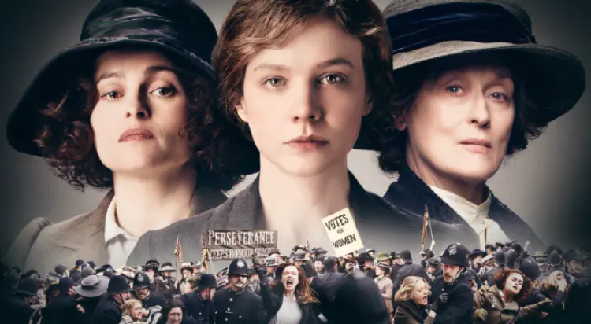
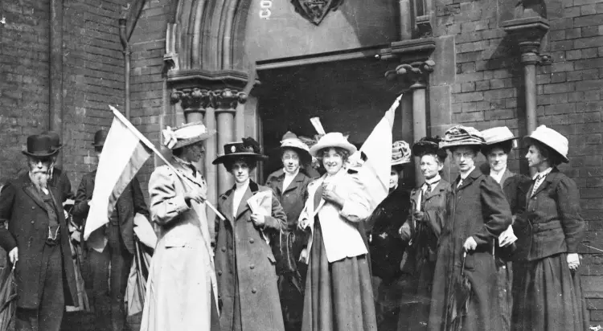

Un club de football, le droit de vote et Star Wars. Trois éléments qui n’ont de prime abord rien en commun, mais une chose les réunit, le féminisme. En grande expansion ces dernières années, le féminisme est devenu très important dans la société actuelle. En effet nous pouvons régulièrement assister à des actions féministe venant de groupe ou même d’un simple rassemblement. Mais il y a une chose à ne pas oublier, le chemin à été long pour en arriver là et de nombreux combats ont été nécessaire. L’un des plus importants est sans doute celui pour le droit de vote des femmes qui a commencé il y a de très nombreuses années et n’est toujours pas fini dans certains pays. De nombreuses disciplines ont aussi eu leur importance dans la lutte féministe, l’une d’entre elle est le cinéma et d’ailleurs le sujet principale de ce site.

Une féministe au cinéma

Depuis de très nombreuses années des personnalités sont engagé dans la lutte féministe comme l’actrice Natalie Portman.
Voir plus ...
De l’histoire au grand écran
Réalisé par Sarah Gavron, le film Les Suffragettes retrace la fin de la lutte des suffragettes à la fin du XXe siècle.
Voir plus ...
Les suffragettes, un histoire de droit de vote
Les suffragettes sont un groupe de militantes qui ont lutté pour le droit de vote des femmes durant plusieurs années.
Voir plus ...
Vidéo
Galerie du féminisme


Voir plus ...